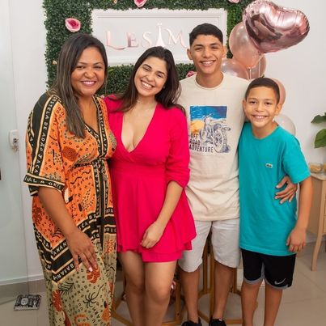

História
Meu nome é Marcela Bittencourt, sou mãe de três filhos, esposa,
apaixonada por Paris e micro-empreendedora. Os dois mais velho são
do primeiro casamento e o mais novo do segundo casamento. Quando eu
e meu marido atual concretizamos que teríamos outro filho (ele não
queria muito rs, mas consegui convencê-lo), decidi então, que
largaria o trabalho CLT, que trabalhava na época e que me dedicaria
a algo que fosse possível ficar mais próxima do meu filho (mais
novo).
Porquê essa decisão? Meus filhos mais velhos, não moravam
comigo desde a infância, e eu sentia muito a falta deles,
infelizmente, por vontade deles, eu não pude criá-los e conviver
dia-a-dia com eles, e o meu sonho era ser mãe. Daí veio o meu mais
novo, a decisão de sair do trabalho para me dedicar mais a ele e
minha família foi tomada. Foi então, que veio a ideia do Salão de
Beleza. Sempre tive afinidade com a estética, desde nova já me
interessava... Com meus vinte e poucos anos, fiz a faculdade de
estética, trabalha e estudava, quando comecei a ter habilidades,
saía para fazer atendimentos domiciliares também, enfim, estética
era a minha área. Após sair do trabalho, para cuidar do meu filho
mais novo (ser mais presente e tals), decidi então, usar o dinheiro
da recisão para investir num Salão de Beleza.
Havia um ponto comercial próximo à minha casa, bem próximo mesmo, uns 70 metros
mais precisamente. E foi como tudo começou, conheci a dona do ponto,
ela foi muito atenciosa e me deixou bem confortavél com a ideia,
pronto, decidi fechar com ela; - Afinal, era tudo que eu queria,
trabalhar próximo da minha casa rs. OBS: Meus familiares, e amigos e
até mesmo meu esposo, acharam um absurdo eu fazer aquilo na época,
pois a rua em que eu morava tinha a fama de ser umna ruia mais
tranquila, um pouco deserta, como traria movimento e faria minha
renda crescer daquilo?! A ideia inicial, era trabalhar somente com
estética e unhas, ao passar do tempo, os clientes foram pedindo
serviços de cabelo; - Pelo menos uma escovista, disse uma cliente.
Foi quando implementei uma escovista. O movimento foi aumentando e
cada dia que passava era notório a necessidade de mais serviços na
parte do cabelo.
Procurei uma cabelereira, assim que achei impletei
todos os serviços de cabelo, ou seja, para quem não queria nenhum
serviço de cabelo, foi uma grande mudança rsrs. O espaço sempre foi
o mesmo, fiz algumas melhorias, e graças a Deus, apesar de muita
achar que não daria certo, omeu negócio deu muito certo rsrs.
Fidelizei clientes, trabalhei o marketing (com planfetos), coloquei
uma prmoção (fazendo pé e mão, ganhe um spa dos pés); e o resto foi
por conta do boca a boca. A área em que estavámos localizadas não
havia salões de beleza tão próximos quanto o meu, creio que foi por
isso que deu certo também e claro, o um bom atendimento faz toda
diferença; sempre prezei pela qualidade em atender bem os clientes,
e até hoje eu e minha equipe preza por isso. Passados alguns anos,
tive a ideia de bolar uma MEGA promoção para minhas clientes
queridas. Bolei um pacote no Dia das Mães: pé e mão + sobrancelha +
escova e prancha.. BUM, foi uma loucura de mulheres dentro do "mini"
salão hehe, e as clientes só falavam, Marcela, você tem que ir para
um espaço maior, esse salõa já está pequeno... e eu realmente já
havia pensado na possibilidade de mudar para um espaço maior,
ampliar, colocar novos serviços e dar um conforto maior aos meus
clientes.
Comecei a pensar bastante nisso, pensei e pensei, foi
quando pensei em sair da minha casa, que também já estava pequena
para mim e meus filhos. Eu não contei, mas meu filho do meio veio
morar comigo com 10 anos, eu já estava com o salão a todo vapor, e
foi uma alegria recebê-lo para morar comigo, desde então ele mora
comigo. Agora, a mais velha também decidiu vir morar comigo, por
isso a necessidade de mudar para uma nova casa para morar também.
Minha casa é pequena, possui apenas dois quartos. Com três filhos,
uma quase adulta, o outro já se tornando adulto também, precisavam
ter suas privacidades; Juntei o útil ao agradável rsrs, e pensei em
ir para uma casa maior, de preferência com 3 quartos, e o salão
passaria para a minha casa, e assim eu poderia ampliar o salão do
jeito que eu queria e trazer mais conforto para meus clientes e
também mais clientes para o meu negócio, pois eu tinha muito medo em
divulgar os serviços que tinham no salão e não dar conta de
atendê-los de maneira agradável e confortável. Pronto, a ideia
estava no ar... mas aí veio a pior notícia de todo o mundo, me ouso
a dizer, a pandemia. Foi um misto de emoções, no início..
incercetezas de como seria o futuro, fecha tudo, se abrisse seria
multado.
Tive que deixar o salão fechado por alguns meses, até que
parcialmente começaram a liberar a abertura dos estabelecimentos e
só então pude reabrir rs... A ideia da troca de espaço teve que ser
adiada devido, a incerteza do amanhã e de como ficariam as coisas.
Após dois anos, pós pandemia, a ideia e o sonho voltou, comecei a
pôr em prática, até que em junho de 2022 pude ter o meu sonho
realizado, inaugurei o meu novo espaço, convidei todos os meus
clientes e fiz uma bela inauguração na noite de 02/06/2022, no dia
seguinta já abrimos à todo vapor. Não foi fácil, tive muitas lutas,
muitos tropeços, mas segui firme, tenho muita fé em Deus e sei que
foi ele em todo o tempo me conduzindo e me fazendo chegar aonde
estou e o meu desejo é sempre, que ele continue me dando forçar para
continuar a minha linda história. Sou muito grata a Deus e sou
muuito feliz com a mulher que me tornei. Só mais uma coisinha rs, a
origem do nome do meu estabelecimento, é: As iniciais dos meus três
filhos. LEtícia, SAmuel e PÊdro, LESAMPÊ. Algumas pessoas pensam que
o significado é alguma palavra francesa, pelo fato de ser louca por
Paris, realmente pela pronúncia pode-se pensar que é algo
relacionado, mas na verdade não é rs. Eu decidi juntar as iniciais
dos meus filhos em ordem de "chegada" e deu em: Lesampê :)